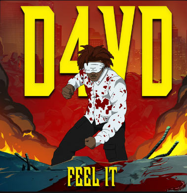
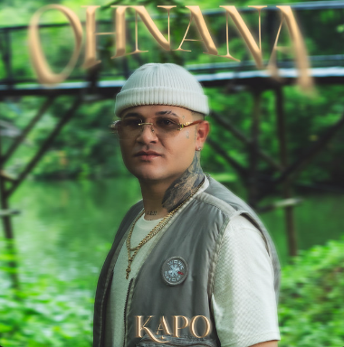
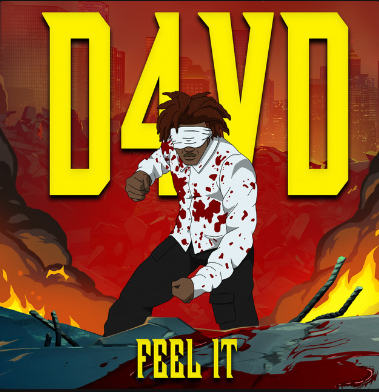
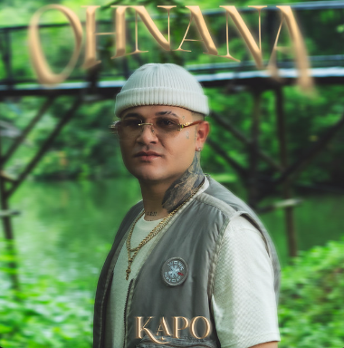
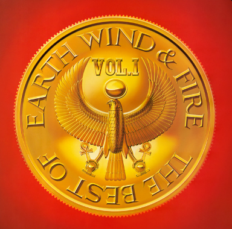
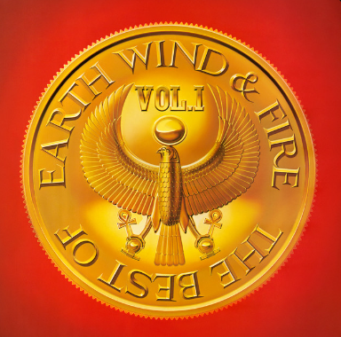

Mis canciones favoritas son las siguientes:
Como dije, tengo gustos musicales muy variados, pero si tuviera que escoger un tipo de música serían los afrobeats o la música del género dancehall. La razón es que tienen una melodía muy smooth, pero hay casos en los que tienen una melodía más fuerte.
También disfruto de la música de la cultura hip hop y funk. Me gustan estos géneros porque me hacen sentir como si estuviera en una fiesta, solo queriendo disfrutar y bailar.
Este ultimo año tambien empece a agarrar un gusto por los musicales lo que me llevo a tener canciones de estas peliculas en mi lista de reproduccion. Por mi parte friki igual suelo escuchar canciones o soundtracks de las mismas franquicias que consumo.

 




 
